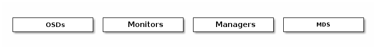
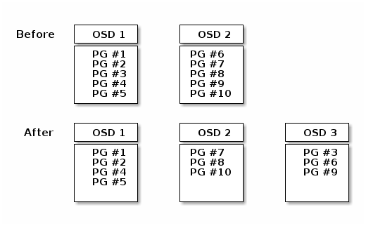
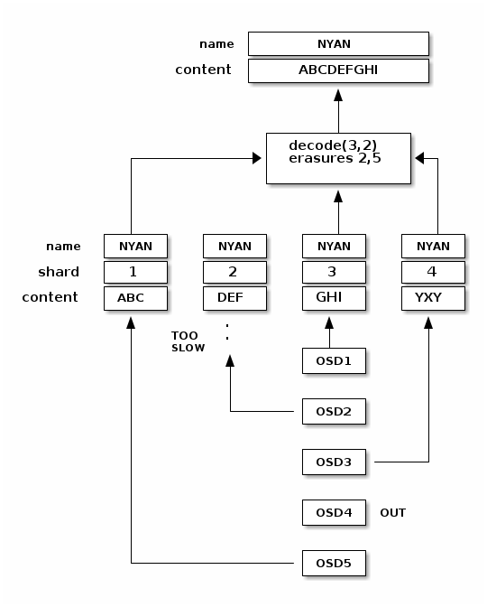
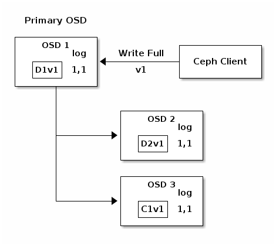
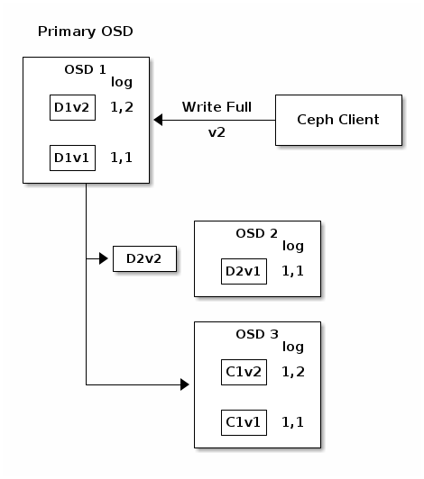
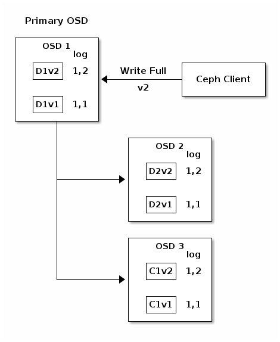
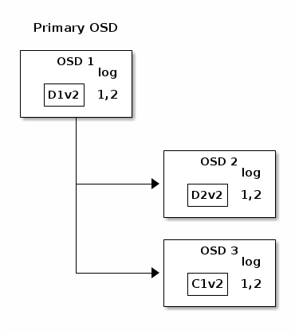
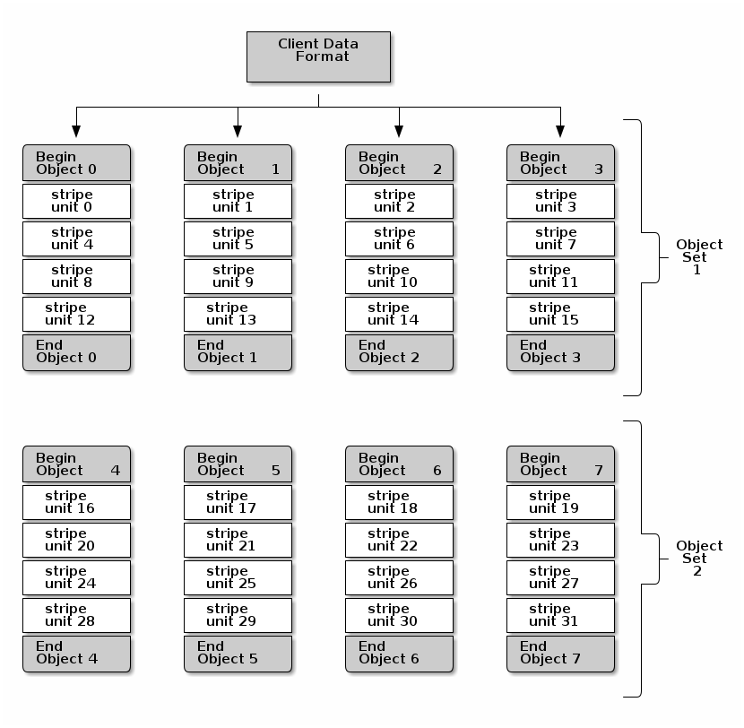
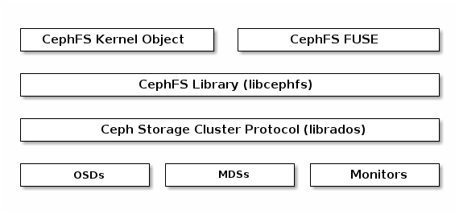

Architecture¶
Ceph uniquely delivers object, block, and file storage in one unified system. Ceph is highly reliable, easy to manage, and free. The power of Ceph can transform your company’s IT infrastructure and your ability to manage vast amounts of data. Ceph delivers extraordinary scalability–thousands of clients accessing petabytes to exabytes of data. A Ceph Node leverages commodity hardware and intelligent daemons, and a Ceph Storage Cluster accommodates large numbers of nodes, which communicate with each other to replicate and redistribute data dynamically.

The Ceph Storage Cluster¶
Ceph provides an infinitely scalable Ceph Storage Cluster based upon RADOS, which you can read about in RADOS - A Scalable, Reliable Storage Service for Petabyte-scale Storage Clusters.
A Ceph Storage Cluster consists of multiple types of daemons:

A Ceph Monitor maintains a master copy of the cluster map. A cluster of Ceph monitors ensures high availability should a monitor daemon fail. Storage cluster clients retrieve a copy of the cluster map from the Ceph Monitor.
A Ceph OSD Daemon checks its own state and the state of other OSDs and reports back to monitors.
A Ceph Manager acts as an endpoint for monitoring, orchestration, and plug-in modules.
A Ceph Metadata Server (MDS) manages file metadata when CephFS is used to provide file services.
Storage cluster clients and each Ceph OSD Daemon use the CRUSH algorithm
to efficiently compute information about data location, instead of having to
depend on a central lookup table. Ceph’s high-level features include a
native interface to the Ceph Storage Cluster via librados, and a number of
service interfaces built on top of librados.
Storing Data¶
The Ceph Storage Cluster receives data from Ceph Clients–whether it
comes through a Ceph Block Device, Ceph Object Storage, the
Ceph File System or a custom implementation you create using
librados– which is stored as RADOS objects. Each object is stored on an
Object Storage Device. Ceph OSD Daemons handle read, write, and
replication operations on storage drives. With the older Filestore back end,
each RADOS object was stored as a separate file on a conventional filesystem
(usually XFS). With the new and default BlueStore back end, objects are
stored in a monolithic database-like fashion.

Ceph OSD Daemons store data as objects in a flat namespace (e.g., no hierarchy of directories). An object has an identifier, binary data, and metadata consisting of a set of name/value pairs. The semantics are completely up to Ceph Clients. For example, CephFS uses metadata to store file attributes such as the file owner, created date, last modified date, and so forth.

Note
An object ID is unique across the entire cluster, not just the local filesystem.
Scalability and High Availability¶
In traditional architectures, clients talk to a centralized component (e.g., a gateway, broker, API, facade, etc.), which acts as a single point of entry to a complex subsystem. This imposes a limit to both performance and scalability, while introducing a single point of failure (i.e., if the centralized component goes down, the whole system goes down, too).
Ceph eliminates the centralized gateway to enable clients to interact with Ceph OSD Daemons directly. Ceph OSD Daemons create object replicas on other Ceph Nodes to ensure data safety and high availability. Ceph also uses a cluster of monitors to ensure high availability. To eliminate centralization, Ceph uses an algorithm called CRUSH.
CRUSH Introduction¶
Ceph Clients and Ceph OSD Daemons both use the CRUSH algorithm to efficiently compute information about object location, instead of having to depend on a central lookup table. CRUSH provides a better data management mechanism compared to older approaches, and enables massive scale by cleanly distributing the work to all the clients and OSD daemons in the cluster. CRUSH uses intelligent data replication to ensure resiliency, which is better suited to hyper-scale storage. The following sections provide additional details on how CRUSH works. For a detailed discussion of CRUSH, see CRUSH - Controlled, Scalable, Decentralized Placement of Replicated Data.
Cluster Map¶
Ceph depends upon Ceph Clients and Ceph OSD Daemons having knowledge of the cluster topology, which is inclusive of 5 maps collectively referred to as the “Cluster Map”:
The Monitor Map: Contains the cluster
fsid, the position, name address and port of each monitor. It also indicates the current epoch, when the map was created, and the last time it changed. To view a monitor map, executeceph mon dump.The OSD Map: Contains the cluster
fsid, when the map was created and last modified, a list of pools, replica sizes, PG numbers, a list of OSDs and their status (e.g.,up,in). To view an OSD map, executeceph osd dump.The PG Map: Contains the PG version, its time stamp, the last OSD map epoch, the full ratios, and details on each placement group such as the PG ID, the Up Set, the Acting Set, the state of the PG (e.g.,
active + clean), and data usage statistics for each pool.The CRUSH Map: Contains a list of storage devices, the failure domain hierarchy (e.g., device, host, rack, row, room, etc.), and rules for traversing the hierarchy when storing data. To view a CRUSH map, execute
ceph osd getcrushmap -o {filename}; then, decompile it by executingcrushtool -d {comp-crushmap-filename} -o {decomp-crushmap-filename}. You can view the decompiled map in a text editor or withcat.The MDS Map: Contains the current MDS map epoch, when the map was created, and the last time it changed. It also contains the pool for storing metadata, a list of metadata servers, and which metadata servers are
upandin. To view an MDS map, executeceph fs dump.
Each map maintains an iterative history of its operating state changes. Ceph Monitors maintain a master copy of the cluster map including the cluster members, state, changes, and the overall health of the Ceph Storage Cluster.
High Availability Monitors¶
Before Ceph Clients can read or write data, they must contact a Ceph Monitor to obtain the most recent copy of the cluster map. A Ceph Storage Cluster can operate with a single monitor; however, this introduces a single point of failure (i.e., if the monitor goes down, Ceph Clients cannot read or write data).
For added reliability and fault tolerance, Ceph supports a cluster of monitors. In a cluster of monitors, latency and other faults can cause one or more monitors to fall behind the current state of the cluster. For this reason, Ceph must have agreement among various monitor instances regarding the state of the cluster. Ceph always uses a majority of monitors (e.g., 1, 2:3, 3:5, 4:6, etc.) and the Paxos algorithm to establish a consensus among the monitors about the current state of the cluster.
For details on configuring monitors, see the Monitor Config Reference.
High Availability Authentication¶
To identify users and protect against man-in-the-middle attacks, Ceph provides
its cephx authentication system to authenticate users and daemons.
Note
The cephx protocol does not address data encryption in transport
(e.g., SSL/TLS) or encryption at rest.
Cephx uses shared secret keys for authentication, meaning both the client and the monitor cluster have a copy of the client’s secret key. The authentication protocol is such that both parties are able to prove to each other they have a copy of the key without actually revealing it. This provides mutual authentication, which means the cluster is sure the user possesses the secret key, and the user is sure that the cluster has a copy of the secret key.
A key scalability feature of Ceph is to avoid a centralized interface to the
Ceph object store, which means that Ceph clients must be able to interact with
OSDs directly. To protect data, Ceph provides its cephx authentication
system, which authenticates users operating Ceph clients. The cephx protocol
operates in a manner with behavior similar to Kerberos.
A user/actor invokes a Ceph client to contact a monitor. Unlike Kerberos, each
monitor can authenticate users and distribute keys, so there is no single point
of failure or bottleneck when using cephx. The monitor returns an
authentication data structure similar to a Kerberos ticket that contains a
session key for use in obtaining Ceph services. This session key is itself
encrypted with the user’s permanent secret key, so that only the user can
request services from the Ceph Monitor(s). The client then uses the session key
to request its desired services from the monitor, and the monitor provides the
client with a ticket that will authenticate the client to the OSDs that actually
handle data. Ceph Monitors and OSDs share a secret, so the client can use the
ticket provided by the monitor with any OSD or metadata server in the cluster.
Like Kerberos, cephx tickets expire, so an attacker cannot use an expired
ticket or session key obtained surreptitiously. This form of authentication will
prevent attackers with access to the communications medium from either creating
bogus messages under another user’s identity or altering another user’s
legitimate messages, as long as the user’s secret key is not divulged before it
expires.
To use cephx, an administrator must set up users first. In the following
diagram, the client.admin user invokes ceph auth get-or-create-key from
the command line to generate a username and secret key. Ceph’s auth
subsystem generates the username and key, stores a copy with the monitor(s) and
transmits the user’s secret back to the client.admin user. This means that
the client and the monitor share a secret key.
Note
The client.admin user must provide the user ID and
secret key to the user in a secure manner.

To authenticate with the monitor, the client passes in the user name to the monitor, and the monitor generates a session key and encrypts it with the secret key associated to the user name. Then, the monitor transmits the encrypted ticket back to the client. The client then decrypts the payload with the shared secret key to retrieve the session key. The session key identifies the user for the current session. The client then requests a ticket on behalf of the user signed by the session key. The monitor generates a ticket, encrypts it with the user’s secret key and transmits it back to the client. The client decrypts the ticket and uses it to sign requests to OSDs and metadata servers throughout the cluster.

The cephx protocol authenticates ongoing communications between the client
machine and the Ceph servers. Each message sent between a client and server,
subsequent to the initial authentication, is signed using a ticket that the
monitors, OSDs and metadata servers can verify with their shared secret.

The protection offered by this authentication is between the Ceph client and the Ceph server hosts. The authentication is not extended beyond the Ceph client. If the user accesses the Ceph client from a remote host, Ceph authentication is not applied to the connection between the user’s host and the client host.
For configuration details, see Cephx Config Guide. For user management details, see User Management.
Smart Daemons Enable Hyperscale¶
In many clustered architectures, the primary purpose of cluster membership is so that a centralized interface knows which nodes it can access. Then the centralized interface provides services to the client through a double dispatch–which is a huge bottleneck at the petabyte-to-exabyte scale.
Ceph eliminates the bottleneck: Ceph’s OSD Daemons AND Ceph Clients are cluster aware. Like Ceph clients, each Ceph OSD Daemon knows about other Ceph OSD Daemons in the cluster. This enables Ceph OSD Daemons to interact directly with other Ceph OSD Daemons and Ceph Monitors. Additionally, it enables Ceph Clients to interact directly with Ceph OSD Daemons.
The ability of Ceph Clients, Ceph Monitors and Ceph OSD Daemons to interact with each other means that Ceph OSD Daemons can utilize the CPU and RAM of the Ceph nodes to easily perform tasks that would bog down a centralized server. The ability to leverage this computing power leads to several major benefits:
OSDs Service Clients Directly: Since any network device has a limit to the number of concurrent connections it can support, a centralized system has a low physical limit at high scales. By enabling Ceph Clients to contact Ceph OSD Daemons directly, Ceph increases both performance and total system capacity simultaneously, while removing a single point of failure. Ceph Clients can maintain a session when they need to, and with a particular Ceph OSD Daemon instead of a centralized server.
OSD Membership and Status: Ceph OSD Daemons join a cluster and report on their status. At the lowest level, the Ceph OSD Daemon status is
upordownreflecting whether or not it is running and able to service Ceph Client requests. If a Ceph OSD Daemon isdownandinthe Ceph Storage Cluster, this status may indicate the failure of the Ceph OSD Daemon. If a Ceph OSD Daemon is not running (e.g., it crashes), the Ceph OSD Daemon cannot notify the Ceph Monitor that it isdown. The OSDs periodically send messages to the Ceph Monitor (MPGStatspre-luminous, and a newMOSDBeaconin luminous). If the Ceph Monitor doesn’t see that message after a configurable period of time then it marks the OSD down. This mechanism is a failsafe, however. Normally, Ceph OSD Daemons will determine if a neighboring OSD is down and report it to the Ceph Monitor(s). This assures that Ceph Monitors are lightweight processes. See Monitoring OSDs and Heartbeats for additional details.Data Scrubbing: As part of maintaining data consistency and cleanliness, Ceph OSD Daemons can scrub objects. That is, Ceph OSD Daemons can compare their local objects metadata with its replicas stored on other OSDs. Scrubbing happens on a per-Placement Group base. Scrubbing (usually performed daily) catches mismatches in size and other metadata. Ceph OSD Daemons also perform deeper scrubbing by comparing data in objects bit-for-bit with their checksums. Deep scrubbing (usually performed weekly) finds bad sectors on a drive that weren’t apparent in a light scrub. See Data Scrubbing for details on configuring scrubbing.
Replication: Like Ceph Clients, Ceph OSD Daemons use the CRUSH algorithm, but the Ceph OSD Daemon uses it to compute where replicas of objects should be stored (and for rebalancing). In a typical write scenario, a client uses the CRUSH algorithm to compute where to store an object, maps the object to a pool and placement group, then looks at the CRUSH map to identify the primary OSD for the placement group.
The client writes the object to the identified placement group in the primary OSD. Then, the primary OSD with its own copy of the CRUSH map identifies the secondary and tertiary OSDs for replication purposes, and replicates the object to the appropriate placement groups in the secondary and tertiary OSDs (as many OSDs as additional replicas), and responds to the client once it has confirmed the object was stored successfully.

With the ability to perform data replication, Ceph OSD Daemons relieve Ceph clients from that duty, while ensuring high data availability and data safety.
Dynamic Cluster Management¶
In the Scalability and High Availability section, we explained how Ceph uses CRUSH, cluster awareness and intelligent daemons to scale and maintain high availability. Key to Ceph’s design is the autonomous, self-healing, and intelligent Ceph OSD Daemon. Let’s take a deeper look at how CRUSH works to enable modern cloud storage infrastructures to place data, rebalance the cluster and recover from faults dynamically.
About Pools¶
The Ceph storage system supports the notion of ‘Pools’, which are logical partitions for storing objects.
Ceph Clients retrieve a Cluster Map from a Ceph Monitor, and write objects to
pools. The pool’s size or number of replicas, the CRUSH rule and the
number of placement groups determine how Ceph will place the data.

Pools set at least the following parameters:
Ownership/Access to Objects
The Number of Placement Groups, and
The CRUSH Rule to Use.
See Set Pool Values for details.
Mapping PGs to OSDs¶
Each pool has a number of placement groups. CRUSH maps PGs to OSDs dynamically. When a Ceph Client stores objects, CRUSH will map each object to a placement group.
Mapping objects to placement groups creates a layer of indirection between the Ceph OSD Daemon and the Ceph Client. The Ceph Storage Cluster must be able to grow (or shrink) and rebalance where it stores objects dynamically. If the Ceph Client “knew” which Ceph OSD Daemon had which object, that would create a tight coupling between the Ceph Client and the Ceph OSD Daemon. Instead, the CRUSH algorithm maps each object to a placement group and then maps each placement group to one or more Ceph OSD Daemons. This layer of indirection allows Ceph to rebalance dynamically when new Ceph OSD Daemons and the underlying OSD devices come online. The following diagram depicts how CRUSH maps objects to placement groups, and placement groups to OSDs.

With a copy of the cluster map and the CRUSH algorithm, the client can compute exactly which OSD to use when reading or writing a particular object.
Calculating PG IDs¶
When a Ceph Client binds to a Ceph Monitor, it retrieves the latest copy of the Cluster Map. With the cluster map, the client knows about all of the monitors, OSDs, and metadata servers in the cluster. However, it doesn’t know anything about object locations.
Object locations get computed.
The only input required by the client is the object ID and the pool. It’s simple: Ceph stores data in named pools (e.g., “liverpool”). When a client wants to store a named object (e.g., “john,” “paul,” “george,” “ringo”, etc.) it calculates a placement group using the object name, a hash code, the number of PGs in the pool and the pool name. Ceph clients use the following steps to compute PG IDs.
The client inputs the pool name and the object ID. (e.g., pool = “liverpool” and object-id = “john”)
Ceph takes the object ID and hashes it.
Ceph calculates the hash modulo the number of PGs. (e.g.,
58) to get a PG ID.Ceph gets the pool ID given the pool name (e.g., “liverpool” =
4)Ceph prepends the pool ID to the PG ID (e.g.,
4.58).
Computing object locations is much faster than performing object location query over a chatty session. The CRUSH algorithm allows a client to compute where objects should be stored, and enables the client to contact the primary OSD to store or retrieve the objects.
Peering and Sets¶
In previous sections, we noted that Ceph OSD Daemons check each other’s heartbeats and report back to the Ceph Monitor. Another thing Ceph OSD daemons do is called ‘peering’, which is the process of bringing all of the OSDs that store a Placement Group (PG) into agreement about the state of all of the objects (and their metadata) in that PG. In fact, Ceph OSD Daemons Report Peering Failure to the Ceph Monitors. Peering issues usually resolve themselves; however, if the problem persists, you may need to refer to the Troubleshooting Peering Failure section.
Note
Agreeing on the state does not mean that the PGs have the latest contents.
The Ceph Storage Cluster was designed to store at least two copies of an object
(i.e., size = 2), which is the minimum requirement for data safety. For high
availability, a Ceph Storage Cluster should store more than two copies of an object
(e.g., size = 3 and min size = 2) so that it can continue to run in a
degraded state while maintaining data safety.
Referring back to the diagram in Smart Daemons Enable Hyperscale, we do not
name the Ceph OSD Daemons specifically (e.g., osd.0, osd.1, etc.), but
rather refer to them as Primary, Secondary, and so forth. By convention,
the Primary is the first OSD in the Acting Set, and is responsible for
coordinating the peering process for each placement group where it acts as
the Primary, and is the ONLY OSD that that will accept client-initiated
writes to objects for a given placement group where it acts as the Primary.
When a series of OSDs are responsible for a placement group, that series of OSDs, we refer to them as an Acting Set. An Acting Set may refer to the Ceph OSD Daemons that are currently responsible for the placement group, or the Ceph OSD Daemons that were responsible for a particular placement group as of some epoch.
The Ceph OSD daemons that are part of an Acting Set may not always be up.
When an OSD in the Acting Set is up, it is part of the Up Set. The Up
Set is an important distinction, because Ceph can remap PGs to other Ceph OSD
Daemons when an OSD fails.
Note
In an Acting Set for a PG containing osd.25, osd.32 and
osd.61, the first OSD, osd.25, is the Primary. If that OSD fails,
the Secondary, osd.32, becomes the Primary, and osd.25 will be
removed from the Up Set.
Rebalancing¶
When you add a Ceph OSD Daemon to a Ceph Storage Cluster, the cluster map gets updated with the new OSD. Referring back to Calculating PG IDs, this changes the cluster map. Consequently, it changes object placement, because it changes an input for the calculations. The following diagram depicts the rebalancing process (albeit rather crudely, since it is substantially less impactful with large clusters) where some, but not all of the PGs migrate from existing OSDs (OSD 1, and OSD 2) to the new OSD (OSD 3). Even when rebalancing, CRUSH is stable. Many of the placement groups remain in their original configuration, and each OSD gets some added capacity, so there are no load spikes on the new OSD after rebalancing is complete.

Data Consistency¶
As part of maintaining data consistency and cleanliness, Ceph OSDs also scrub objects within placement groups. That is, Ceph OSDs compare object metadata in one placement group with its replicas in placement groups stored in other OSDs. Scrubbing (usually performed daily) catches OSD bugs or filesystem errors, often as a result of hardware issues. OSDs also perform deeper scrubbing by comparing data in objects bit-for-bit. Deep scrubbing (by default performed weekly) finds bad blocks on a drive that weren’t apparent in a light scrub.
See Data Scrubbing for details on configuring scrubbing.
Erasure Coding¶
An erasure coded pool stores each object as K+M chunks. It is divided into
K data chunks and M coding chunks. The pool is configured to have a size
of K+M so that each chunk is stored in an OSD in the acting set. The rank of
the chunk is stored as an attribute of the object.
For instance an erasure coded pool can be created to use five OSDs (K+M = 5) and
sustain the loss of two of them (M = 2).
Reading and Writing Encoded Chunks¶
When the object NYAN containing ABCDEFGHI is written to the pool, the erasure
encoding function splits the content into three data chunks simply by dividing
the content in three: the first contains ABC, the second DEF and the
last GHI. The content will be padded if the content length is not a multiple
of K. The function also creates two coding chunks: the fourth with YXY
and the fifth with QGC. Each chunk is stored in an OSD in the acting set.
The chunks are stored in objects that have the same name (NYAN) but reside
on different OSDs. The order in which the chunks were created must be preserved
and is stored as an attribute of the object (shard_t), in addition to its
name. Chunk 1 contains ABC and is stored on OSD5 while chunk 4 contains
YXY and is stored on OSD3.

When the object NYAN is read from the erasure coded pool, the decoding
function reads three chunks: chunk 1 containing ABC, chunk 3 containing
GHI and chunk 4 containing YXY. Then, it rebuilds the original content
of the object ABCDEFGHI. The decoding function is informed that the chunks 2
and 5 are missing (they are called ‘erasures’). The chunk 5 could not be read
because the OSD4 is out. The decoding function can be called as soon as
three chunks are read: OSD2 was the slowest and its chunk was not taken into
account.

Interrupted Full Writes¶
In an erasure coded pool, the primary OSD in the up set receives all write
operations. It is responsible for encoding the payload into K+M chunks and
sends them to the other OSDs. It is also responsible for maintaining an
authoritative version of the placement group logs.
In the following diagram, an erasure coded placement group has been created with
K = 2, M = 1 and is supported by three OSDs, two for K and one for
M. The acting set of the placement group is made of OSD 1, OSD 2 and
OSD 3. An object has been encoded and stored in the OSDs : the chunk
D1v1 (i.e. Data chunk number 1, version 1) is on OSD 1, D2v1 on
OSD 2 and C1v1 (i.e. Coding chunk number 1, version 1) on OSD 3. The
placement group logs on each OSD are identical (i.e. 1,1 for epoch 1,
version 1).

OSD 1 is the primary and receives a WRITE FULL from a client, which
means the payload is to replace the object entirely instead of overwriting a
portion of it. Version 2 (v2) of the object is created to override version 1
(v1). OSD 1 encodes the payload into three chunks: D1v2 (i.e. Data
chunk number 1 version 2) will be on OSD 1, D2v2 on OSD 2 and
C1v2 (i.e. Coding chunk number 1 version 2) on OSD 3. Each chunk is sent
to the target OSD, including the primary OSD which is responsible for storing
chunks in addition to handling write operations and maintaining an authoritative
version of the placement group logs. When an OSD receives the message
instructing it to write the chunk, it also creates a new entry in the placement
group logs to reflect the change. For instance, as soon as OSD 3 stores
C1v2, it adds the entry 1,2 ( i.e. epoch 1, version 2 ) to its logs.
Because the OSDs work asynchronously, some chunks may still be in flight ( such
as D2v2 ) while others are acknowledged and persisted to storage drives
(such as C1v1 and D1v1).

If all goes well, the chunks are acknowledged on each OSD in the acting set and
the logs’ last_complete pointer can move from 1,1 to 1,2.

Finally, the files used to store the chunks of the previous version of the
object can be removed: D1v1 on OSD 1, D2v1 on OSD 2 and C1v1
on OSD 3.

But accidents happen. If OSD 1 goes down while D2v2 is still in flight,
the object’s version 2 is partially written: OSD 3 has one chunk but that is
not enough to recover. It lost two chunks: D1v2 and D2v2 and the
erasure coding parameters K = 2, M = 1 require that at least two chunks are
available to rebuild the third. OSD 4 becomes the new primary and finds that
the last_complete log entry (i.e., all objects before this entry were known
to be available on all OSDs in the previous acting set ) is 1,1 and that
will be the head of the new authoritative log.

The log entry 1,2 found on OSD 3 is divergent from the new authoritative log
provided by OSD 4: it is discarded and the file containing the C1v2
chunk is removed. The D1v1 chunk is rebuilt with the decode function of
the erasure coding library during scrubbing and stored on the new primary
OSD 4.

See Erasure Code Notes for additional details.
Cache Tiering¶
A cache tier provides Ceph Clients with better I/O performance for a subset of the data stored in a backing storage tier. Cache tiering involves creating a pool of relatively fast/expensive storage devices (e.g., solid state drives) configured to act as a cache tier, and a backing pool of either erasure-coded or relatively slower/cheaper devices configured to act as an economical storage tier. The Ceph objecter handles where to place the objects and the tiering agent determines when to flush objects from the cache to the backing storage tier. So the cache tier and the backing storage tier are completely transparent to Ceph clients.

See Cache Tiering for additional details. Note that Cache Tiers can be tricky and their use is now discouraged.
Extending Ceph¶
You can extend Ceph by creating shared object classes called ‘Ceph Classes’.
Ceph loads .so classes stored in the osd class dir directory dynamically
(i.e., $libdir/rados-classes by default). When you implement a class, you
can create new object methods that have the ability to call the native methods
in the Ceph Object Store, or other class methods you incorporate via libraries
or create yourself.
On writes, Ceph Classes can call native or class methods, perform any series of operations on the inbound data and generate a resulting write transaction that Ceph will apply atomically.
On reads, Ceph Classes can call native or class methods, perform any series of operations on the outbound data and return the data to the client.
Ceph Class Example
A Ceph class for a content management system that presents pictures of a particular size and aspect ratio could take an inbound bitmap image, crop it to a particular aspect ratio, resize it and embed an invisible copyright or watermark to help protect the intellectual property; then, save the resulting bitmap image to the object store.
See src/objclass/objclass.h, src/fooclass.cc and src/barclass for
exemplary implementations.
Summary¶
Ceph Storage Clusters are dynamic–like a living organism. Whereas, many storage appliances do not fully utilize the CPU and RAM of a typical commodity server, Ceph does. From heartbeats, to peering, to rebalancing the cluster or recovering from faults, Ceph offloads work from clients (and from a centralized gateway which doesn’t exist in the Ceph architecture) and uses the computing power of the OSDs to perform the work. When referring to Hardware Recommendations and the Network Config Reference, be cognizant of the foregoing concepts to understand how Ceph utilizes computing resources.
Ceph Protocol¶
Ceph Clients use the native protocol for interacting with the Ceph Storage
Cluster. Ceph packages this functionality into the librados library so that
you can create your own custom Ceph Clients. The following diagram depicts the
basic architecture.

Native Protocol and librados¶
Modern applications need a simple object storage interface with asynchronous communication capability. The Ceph Storage Cluster provides a simple object storage interface with asynchronous communication capability. The interface provides direct, parallel access to objects throughout the cluster.
Pool Operations
Snapshots and Copy-on-write Cloning
Read/Write Objects - Create or Remove - Entire Object or Byte Range - Append or Truncate
Create/Set/Get/Remove XATTRs
Create/Set/Get/Remove Key/Value Pairs
Compound operations and dual-ack semantics
Object Classes
Object Watch/Notify¶
A client can register a persistent interest with an object and keep a session to the primary OSD open. The client can send a notification message and a payload to all watchers and receive notification when the watchers receive the notification. This enables a client to use any object as a synchronization/communication channel.

Data Striping¶
Storage devices have throughput limitations, which impact performance and scalability. So storage systems often support striping–storing sequential pieces of information across multiple storage devices–to increase throughput and performance. The most common form of data striping comes from RAID. The RAID type most similar to Ceph’s striping is RAID 0, or a ‘striped volume’. Ceph’s striping offers the throughput of RAID 0 striping, the reliability of n-way RAID mirroring and faster recovery.
Ceph provides three types of clients: Ceph Block Device, Ceph File System, and Ceph Object Storage. A Ceph Client converts its data from the representation format it provides to its users (a block device image, RESTful objects, CephFS filesystem directories) into objects for storage in the Ceph Storage Cluster.
Tip
The objects Ceph stores in the Ceph Storage Cluster are not striped.
Ceph Object Storage, Ceph Block Device, and the Ceph File System stripe their
data over multiple Ceph Storage Cluster objects. Ceph Clients that write
directly to the Ceph Storage Cluster via librados must perform the
striping (and parallel I/O) for themselves to obtain these benefits.
The simplest Ceph striping format involves a stripe count of 1 object. Ceph Clients write stripe units to a Ceph Storage Cluster object until the object is at its maximum capacity, and then create another object for additional stripes of data. The simplest form of striping may be sufficient for small block device images, S3 or Swift objects and CephFS files. However, this simple form doesn’t take maximum advantage of Ceph’s ability to distribute data across placement groups, and consequently doesn’t improve performance very much. The following diagram depicts the simplest form of striping:

If you anticipate large images sizes, large S3 or Swift objects (e.g., video), or large CephFS directories, you may see considerable read/write performance improvements by striping client data over multiple objects within an object set. Significant write performance occurs when the client writes the stripe units to their corresponding objects in parallel. Since objects get mapped to different placement groups and further mapped to different OSDs, each write occurs in parallel at the maximum write speed. A write to a single drive would be limited by the head movement (e.g. 6ms per seek) and bandwidth of that one device (e.g. 100MB/s). By spreading that write over multiple objects (which map to different placement groups and OSDs) Ceph can reduce the number of seeks per drive and combine the throughput of multiple drives to achieve much faster write (or read) speeds.
Note
Striping is independent of object replicas. Since CRUSH replicates objects across OSDs, stripes get replicated automatically.
In the following diagram, client data gets striped across an object set
(object set 1 in the following diagram) consisting of 4 objects, where the
first stripe unit is stripe unit 0 in object 0, and the fourth stripe
unit is stripe unit 3 in object 3. After writing the fourth stripe, the
client determines if the object set is full. If the object set is not full, the
client begins writing a stripe to the first object again (object 0 in the
following diagram). If the object set is full, the client creates a new object
set (object set 2 in the following diagram), and begins writing to the first
stripe (stripe unit 16) in the first object in the new object set (object
4 in the diagram below).

Three important variables determine how Ceph stripes data:
Object Size: Objects in the Ceph Storage Cluster have a maximum configurable size (e.g., 2MB, 4MB, etc.). The object size should be large enough to accommodate many stripe units, and should be a multiple of the stripe unit.
Stripe Width: Stripes have a configurable unit size (e.g., 64kb). The Ceph Client divides the data it will write to objects into equally sized stripe units, except for the last stripe unit. A stripe width, should be a fraction of the Object Size so that an object may contain many stripe units.
Stripe Count: The Ceph Client writes a sequence of stripe units over a series of objects determined by the stripe count. The series of objects is called an object set. After the Ceph Client writes to the last object in the object set, it returns to the first object in the object set.
Important
Test the performance of your striping configuration before putting your cluster into production. You CANNOT change these striping parameters after you stripe the data and write it to objects.
Once the Ceph Client has striped data to stripe units and mapped the stripe units to objects, Ceph’s CRUSH algorithm maps the objects to placement groups, and the placement groups to Ceph OSD Daemons before the objects are stored as files on a storage drive.
Note
Since a client writes to a single pool, all data striped into objects get mapped to placement groups in the same pool. So they use the same CRUSH map and the same access controls.
Ceph Clients¶
Ceph Clients include a number of service interfaces. These include:
Block Devices: The Ceph Block Device (a.k.a., RBD) service provides resizable, thin-provisioned block devices with snapshotting and cloning. Ceph stripes a block device across the cluster for high performance. Ceph supports both kernel objects (KO) and a QEMU hypervisor that uses
librbddirectly–avoiding the kernel object overhead for virtualized systems.Object Storage: The Ceph Object Storage (a.k.a., RGW) service provides RESTful APIs with interfaces that are compatible with Amazon S3 and OpenStack Swift.
Filesystem: The Ceph File System (CephFS) service provides a POSIX compliant filesystem usable with
mountor as a filesystem in user space (FUSE).
Ceph can run additional instances of OSDs, MDSs, and monitors for scalability and high availability. The following diagram depicts the high-level architecture.

Ceph Object Storage¶
The Ceph Object Storage daemon, radosgw, is a FastCGI service that provides
a RESTful HTTP API to store objects and metadata. It layers on top of the Ceph
Storage Cluster with its own data formats, and maintains its own user database,
authentication, and access control. The RADOS Gateway uses a unified namespace,
which means you can use either the OpenStack Swift-compatible API or the Amazon
S3-compatible API. For example, you can write data using the S3-compatible API
with one application and then read data using the Swift-compatible API with
another application.
S3/Swift Objects and Store Cluster Objects Compared
Ceph’s Object Storage uses the term object to describe the data it stores. S3 and Swift objects are not the same as the objects that Ceph writes to the Ceph Storage Cluster. Ceph Object Storage objects are mapped to Ceph Storage Cluster objects. The S3 and Swift objects do not necessarily correspond in a 1:1 manner with an object stored in the storage cluster. It is possible for an S3 or Swift object to map to multiple Ceph objects.
See Ceph Object Storage for details.
Ceph Block Device¶
A Ceph Block Device stripes a block device image over multiple objects in the
Ceph Storage Cluster, where each object gets mapped to a placement group and
distributed, and the placement groups are spread across separate ceph-osd
daemons throughout the cluster.
Important
Striping allows RBD block devices to perform better than a single server could!
Thin-provisioned snapshottable Ceph Block Devices are an attractive option for
virtualization and cloud computing. In virtual machine scenarios, people
typically deploy a Ceph Block Device with the rbd network storage driver in
QEMU/KVM, where the host machine uses librbd to provide a block device
service to the guest. Many cloud computing stacks use libvirt to integrate
with hypervisors. You can use thin-provisioned Ceph Block Devices with QEMU and
libvirt to support OpenStack and CloudStack among other solutions.
While we do not provide librbd support with other hypervisors at this time,
you may also use Ceph Block Device kernel objects to provide a block device to a
client. Other virtualization technologies such as Xen can access the Ceph Block
Device kernel object(s). This is done with the command-line tool rbd.
Ceph File System¶
The Ceph File System (CephFS) provides a POSIX-compliant filesystem as a service that is layered on top of the object-based Ceph Storage Cluster. CephFS files get mapped to objects that Ceph stores in the Ceph Storage Cluster. Ceph Clients mount a CephFS filesystem as a kernel object or as a Filesystem in User Space (FUSE).

The Ceph File System service includes the Ceph Metadata Server (MDS) deployed
with the Ceph Storage cluster. The purpose of the MDS is to store all the
filesystem metadata (directories, file ownership, access modes, etc) in
high-availability Ceph Metadata Servers where the metadata resides in memory.
The reason for the MDS (a daemon called ceph-mds) is that simple filesystem
operations like listing a directory or changing a directory (ls, cd)
would tax the Ceph OSD Daemons unnecessarily. So separating the metadata from
the data means that the Ceph File System can provide high performance services
without taxing the Ceph Storage Cluster.
CephFS separates the metadata from the data, storing the metadata in the MDS,
and storing the file data in one or more objects in the Ceph Storage Cluster.
The Ceph filesystem aims for POSIX compatibility. ceph-mds can run as a
single process, or it can be distributed out to multiple physical machines,
either for high availability or for scalability.
High Availability: The extra
ceph-mdsinstances can be standby, ready to take over the duties of any failedceph-mdsthat was active. This is easy because all the data, including the journal, is stored on RADOS. The transition is triggered automatically byceph-mon.Scalability: Multiple
ceph-mdsinstances can be active, and they will split the directory tree into subtrees (and shards of a single busy directory), effectively balancing the load amongst all active servers.
Combinations of standby and active etc are possible, for example
running 3 active ceph-mds instances for scaling, and one standby
instance for high availability.